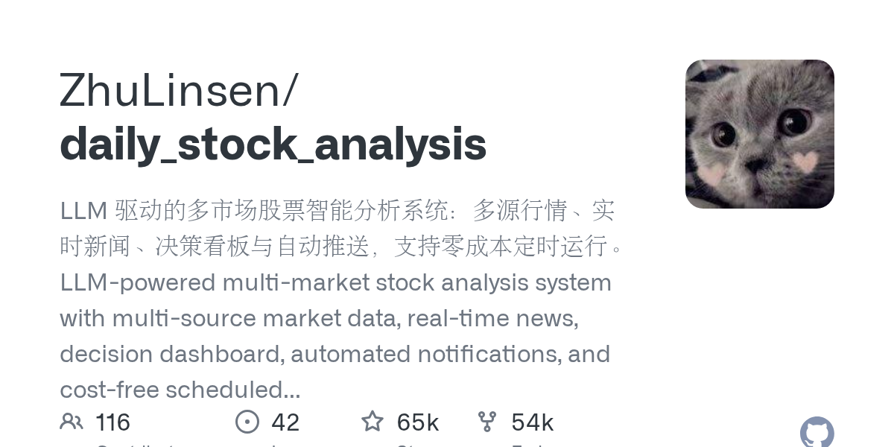

01 GitHub · zhulinsen 최근 활동 2026.09.05
주식 보고서를 자동으로 보내는 분석 시스템
스타 64,674 · 이번 주 +1 · Python · MIT 사내 사용 가능 · 최근 릴리스 v3.31.0 (08.23) · 테스트 있음 · 예제 없음 · AGENTS.md 있음

이 저장소는 주식 분석 업무를 자동화하려는 팀을 겨냥한다. 관심 종목과 알림 채널, AI 모델만 정하면 보고서 생성 흐름을 맞출 수 있다. 무료 시세원으로 바로 시작할 수 있지만 안정성은 보장하지 않는다. 오래 돌리거나 대량 분석을 하려면 데이터 소스와 검색 소스를 따로 구성해야 한다.
무엇을 하는 물건인가
이 저장소는 여러 시장의 주식을 분석해 일일 보고서와 알림을 만드는 시스템이다. 시세와 뉴스, 공시 성격의 정보를 모아 종목별 판단 보드를 만든다. 사용자는 관심 종목과 알림 채널을 정해두면 된다. 매일 정해진 시간에 브리핑 자료를 대신 써 주는 비서에 가깝다.
스펙과 도입 조건
- 언어는 Python이다.
- 설치 형태는 GitHub Actions 실행, 로컬 실행, Docker 배포를 지원한다.
- Web 작업대는 브라우저로 접속해 쓴다.
- AI 분석을 쓰려면 최소 1개의 외부 AI API 키가 필요하다.
- 알림을 받으려면 최소 1개의 알림 채널 설정이 필요하다.
- 뉴스 품질을 높이려면 검색 서비스 설정을 권장한다.
- 라이선스는 MIT다.
- 최신 릴리스는 v3.31.0이며 2026-08-23에 공개됐다.
이럴 때 쓰면 좋다
- 리서치팀이 여러 시장의 관심 종목을 묶어 퇴근 전 요약 보고서를 자동으로 받고 싶을 때 쓸 만하다.
- 운영팀이 야간 배치 대신 평일 18시에 종목 점검과 알림 발송을 자동화하려 할 때 맞는다.
- 임원 보고용으로 시장 복기와 종목별 리스크 경고를 한 화면에서 확인하려는 경우에 어울린다.
핵심 기능
- A주, 홍콩, 미국, 일본, 한국, 대만 주식과 ETF를 묶어 분석한다.
- 기업 메신저, Slack, 이메일 등으로 결정 대시보드를 자동 발송한다.
- Web 작업대에서 수동 분석, 과거 보고서 조회, 회고, 보유 종목 관리, 전략형 질의를 처리한다.
왜 지금 주목받나
이 도구는 시세 수집, 뉴스 검색, 보고서 작성, 알림 발송을 한 흐름으로 묶었다. 무료 시세원을 기본 내장해 바로 돌릴 수 있지만, 장기 자동 실행이나 대량 분석에는 TickFlow, Tushare, Longbridge 같은 토큰형 데이터 소스를 권한다. 이번 버전에서는 Agent 도구 호출 시간 제한을 도구 묶음별과 개별 도구별로 따로 설정할 수 있게 바꿨다. 서비스 재시작 뒤에도 예약 작업을 복구하고, 뉴스가 비었을 때는 보고서에 근거 한계를 그대로 드러내도록 고쳤다.
이 저장소는 종목 분석뿐 아니라 시장 복기와 전략형 질의도 한 화면에 담는다. 내장 전략은 이동평균 교차, 추세, 이벤트, 성장성 같은 여러 관점을 포함한다. 이미지, CSV, Excel, 클립보드에서 종목을 들여오는 기능도 있다. 보고서 자동화와 대화형 분석을 한 저장소에서 같이 다루고 싶을 때 차별점이 분명하다.
| 능력 | 지원 내용 |
|---|---|
| AI 결정 보고서 | 핵심 결론, 점수, 추세, 매수·매도 구간, 위험 경고, 촉매, 체크리스트 |
| 다중 시장 데이터 | A주, 홍콩, 미국, 일본, 한국, 대만, ETF 지원 |
| Web/데스크톱 작업대 | 수동 분석, 작업 진행, 과거 보고서, 완전한 Markdown, 회고, 보유 종목, 설정 관리 |
| 전략형 Agent 질의 | 15종 내장 전략, Web/Bot/API 지원 |
| 자동화와 발송 | GitHub Actions, Docker, 로컬 스케줄, FastAPI, 기업 메신저·이메일 발송 |
사내 도입 체크
- 외부 AI API 호출이 필요하다. 어떤 모델 사업자를 쓸지 먼저 정해야 한다.
- 뉴스 검색 서비스와 시세 데이터 소스를 붙이면 외부로 질의가 나간다. 종목 목록과 질의 문구의 반출 범위는 확인이 필요하다.
- 유지보수 주체는 개인 개발자와 기여자들이다. 장애 대응과 장기 지원 수준은 확인이 필요하다.
- 사내 증권 브리핑, 메신저 알림, 간단한 시장 복기 도구는 일부 상용 솔루션으로 대체할 수 있다.
주요 용어
원문 정보
제목: ZhuLinsen/daily_stock_analysis
최근 활동: 2026.09.05